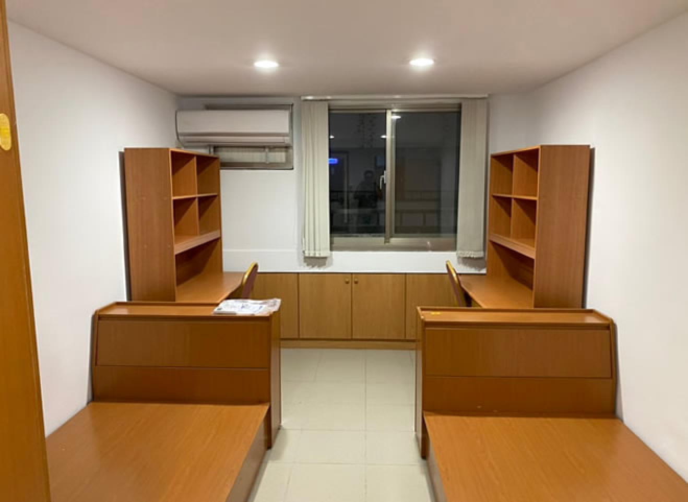
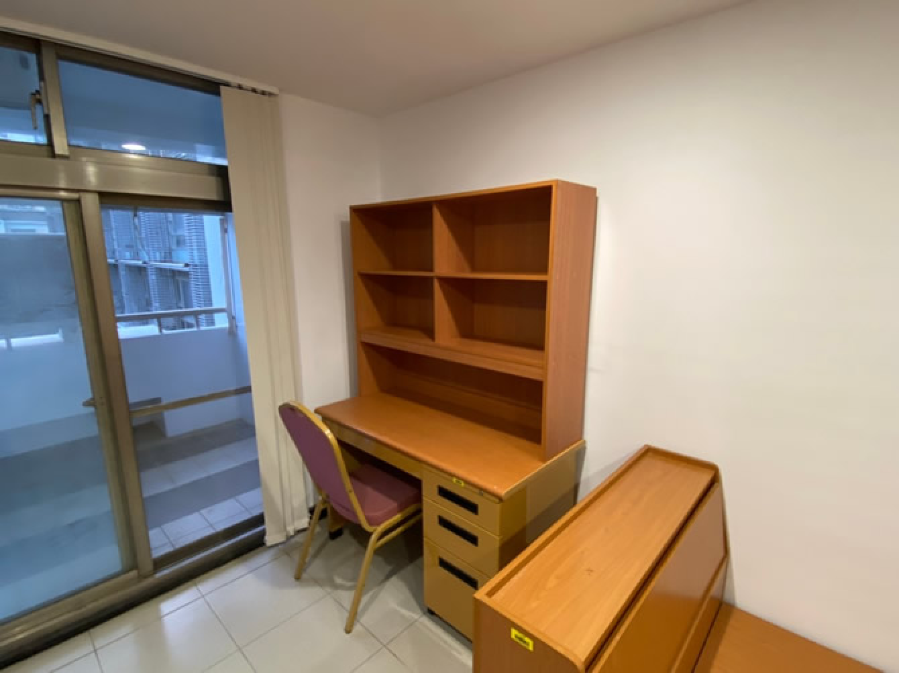

Dorm fee : 25,400 NTD/semester (with balcony)
24,800 NTD/semester (without balcony)
Deposit : 4,000 NTD/year
Students who have been approved should pay off all relevant fees within the appointed time period, plus they must stay for one academic year. For those who stay less than one year, the dormitory deposit will not be refunded.
Miscellaneous :
- Air-conditioning fee: according to electricity used. It shall be paid with air-conditioning stored-value card.
- Internet fee: 639 NTD/Semester (bedroom phone included)
- Student Dorm Committee Fee: 100 NTD/Year.
Facilities : Single beds (mattress not included), desks, clothing cabinets;
Public shower rooms and clothes washing machines;
Public refrigerators, 17 fridges for 3 halls;
Small kitchens in four areas including steam cookers, microwaves, induction cookers.